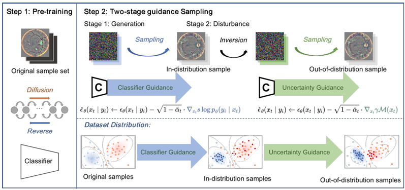

Publications
Some of the papers in which I was a core participant are highlighted .
Your browser does not support the video tag.
Noise Calibration: Plug-and-play Content-Preserving Video Enhancement using Pre-trained Video Diffusion Models
Qinyu Yang ,
Haoxin Chen ,
Yong Zhang ,
Menghan Xia ,
Xiaodong Cun ,
Zhixun Su ,
Ying Shan
ECCV , 2024
Project page /
arXiv /
Github
Plug-and-play video enhancement model based on pre-trained diffusion model.

Measurement Guidance in Diffusion Models: Insight from Medical Image Synthesis
Yimin Luo*,
Qinyu Yang* ,
Yuheng Fan,
Haikun Qi,
Menghan Xia,
TPAMI , 2024
Github
We introduce uncertainty into the sampling process of the Diffusion Model and expand the Classifier-guided Method to generate samples that are more suitable for data augmentation in classification tasks.
Target-Guided Diffusion Models for Unpaired Cross-Modality Medical Image Translation
Yimin Luo,
Qinyu Yang ,
Ziyi Liu,
Zenglin Shi,
Weimin Huang,
Guoyan Zheng,
Jun Cheng,
IEEE Journal of Biomedical and Health Informatics (IF:6.7) , 2024
Diffusion Model for Image Translation. We propose a target-guided diffusion model for unpaired cross-modal medical image translation.
Learning A Coarse-to-Fine Diffusion Transformer for Image Restoration
Liyan Wang,
Qinyu Yang ,
Cong Wang,
Wei Wang,
Zhixun Su,
arXiv , 2023
arXiv /
Github
Diffusion Model for Image Restoration. We refer to DIT and Restormer to come up with a network architecture for image restoration and design a training process for image restoration.
Webpage templete is borrowed from this
{kind=link}